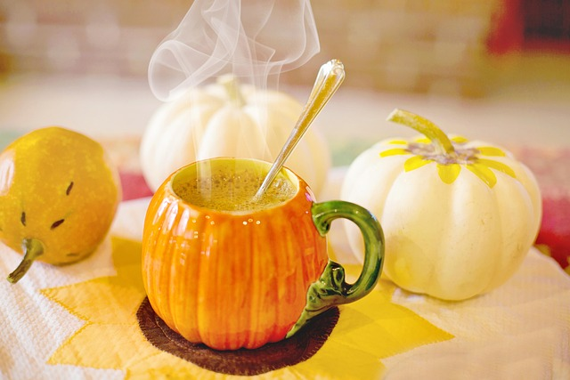

Home
Homemade Pumpkin Spice Latte's recipe

This pumpkin spice latte is a recipe mixing originality and simplicity.
You can use canned pumpkin pie mix instead of puree if you like. Top with nutmeg or cinnamon and enjoy!
Beware! Just for the lovers of good food !
Recipe for 1 person :
Ingredients
- 1 cup milk
- 2 tablespoons white sugar or to taste
- 2 tablespoons canned pumpkin puree
- 1 teaspoon vanilla extract
- 1 teaspoon pumpkin pie spice
- 1 (1.5 fluid ounce) jigger brewed espresso
Steps
- Gather all ingredients.
- Whisk milk, pumpkin, sugar, vanilla, and pumpkin pie together in a small saucepan; warm over medium heat, whisking constantly, until hot and frothy.
- Pour brewed espresso into a mug and add pumpkin spiced milk over top. Serve.